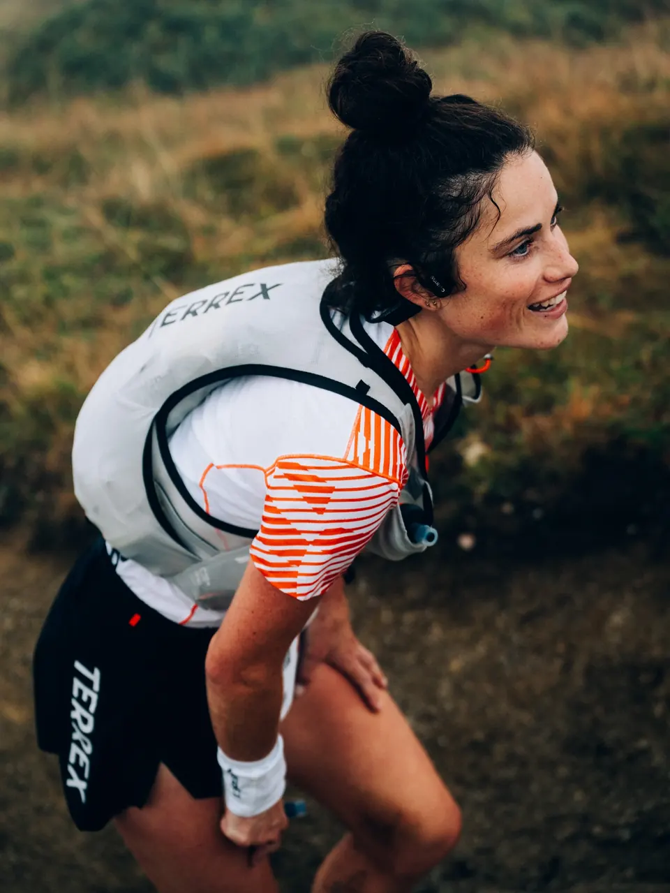
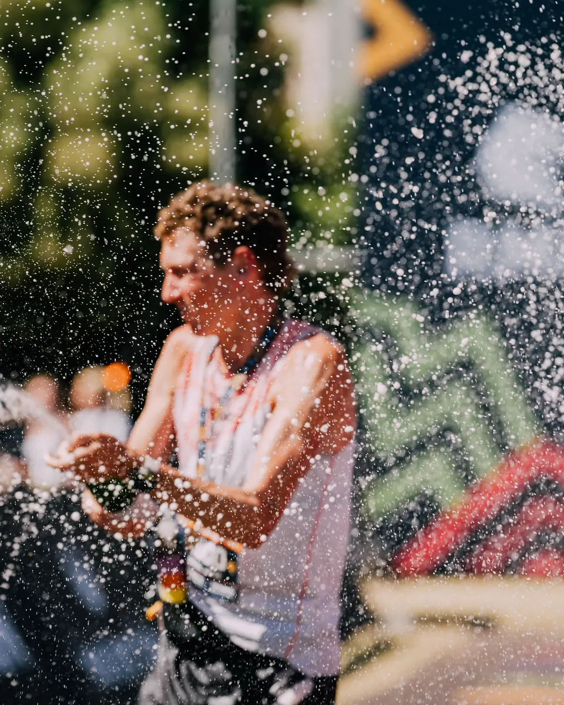
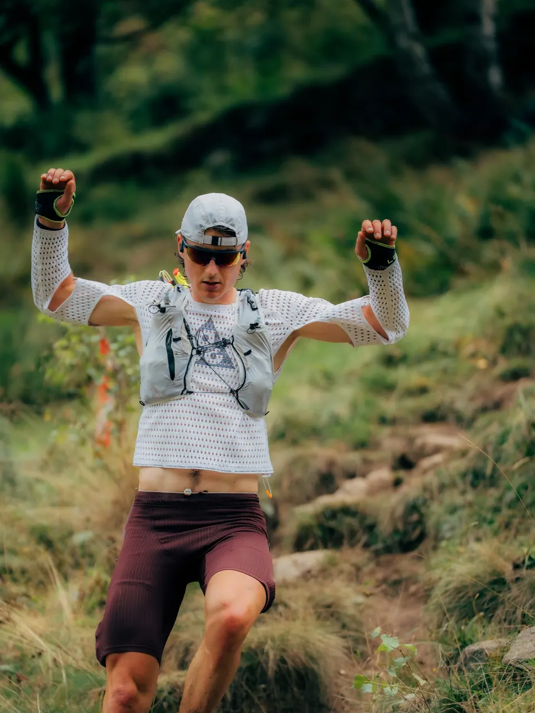
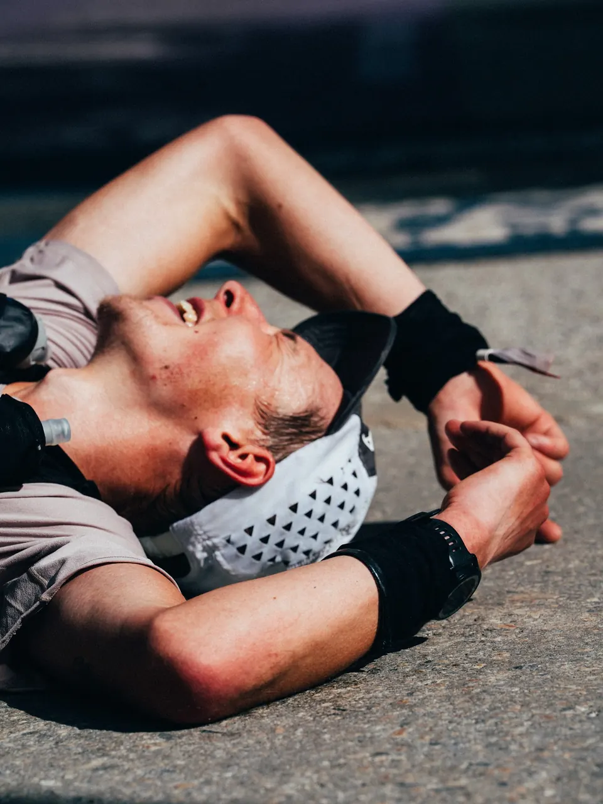
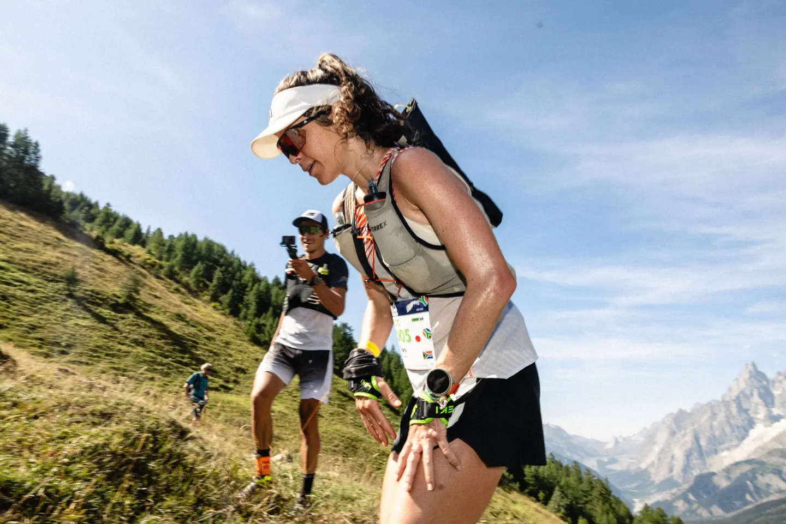

Le Cabri
Plus ça monte raide, plus tu es dans ton élément.



SUM'IT apprend ton allure sur tes propres traces GPX, en montée comme en descente, et te donne ton heure de passage à chaque ravito.
98,4 km et 5 742 m de dénivelé positif de Courmayeur à Chamonix. Règle ton départ et tes pauses : les heures de passage et la nuit se déplacent sur le profil.
Tes sortiesTes traces GPX ou Strava. SUM'IT mesure ton allure sur sept types de pente, de la montée raide à la descente raide.
1 sur 4Ta courseDépose la trace de ta course et tes ravitos : temps total, fourchette et heure de passage à chaque point.
2 sur 4
Le jour JTon roadbook en poche : imprimé en A4 ou ouvert sur ton téléphone, avec l'heure de chaque passage.
3 sur 4
Le bilanAprès la course, ta trace face à la prédiction, ravito par ravito. Ton profil se recalibre.
4 sur 4
Ce sont les huit profils que SUM'IT reconnaît dans tes traces. Le tien se recalcule à chaque sortie importée, et il peut changer avec ta forme.
Plus ça monte raide, plus tu es dans ton élément.
Tu avales le dénivelé. Les longues montées sont ton terrain.
Plus la descente est technique, plus tu vas vite.
Tu reprends en descente le temps laissé dans les montées.
La même aisance partout, sans point faible marqué.
Tu pars calmement, tu tiens des heures et tu finis fort.
Rapide sur le plat et le roulant, freiné par le relief.
Tu ne lâches rien. Ta force, c'est la durée.
Ton profil se construit dès la première sortie. Il devient fiable à partir de trois, et vraiment personnel vers cinq à dix sorties variées : des montées, des descentes et au moins une sortie longue. Chaque import le recalcule.
Oui. Tout fichier GPX enregistré par une montre ou un téléphone convient, puisqu'il contient l'altitude et l'heure de chaque point. Tu peux aussi connecter Strava et choisir tes activités dans une liste filtrable.
SUM'IT découpe le parcours en segments et leur applique ta vitesse équivalente plat mesurée sur sept classes de pente. Il ajoute un modèle de fatigue : la fatigue mécanique du dénivelé encaissé et une batterie d'énergie qui se vide avec la durée. Tu obtiens un temps central et une fourchette basse et haute.
Oui. Ton profil rando est séparé de ton profil trail : tes sorties à pied ne faussent pas tes temps de course, et inversement. Tu choisis le profil à utiliser dans le simulateur.
Importe ta course en type Résultat. Le Bilan compare chaque point de passage à la prédiction et te propose d'ajuster ton coefficient course. Rien ne change sans ta validation.
Oui. Tes traces servent uniquement à calculer ton profil, rien n'est revendu ni partagé. Tu peux supprimer chaque activité et déconnecter Strava à tout moment.
Oui, pendant la bêta. La démo sur la CCC fonctionne sans compte ; pour ton profil, une connexion Google suffit.
Télécharge ton roadbook en PDF depuis le simulateur : heures de passage, fourchettes et profil tiennent sur une page A4, à garder dans le téléphone ou à imprimer.
Écris-nous, on lit tout.